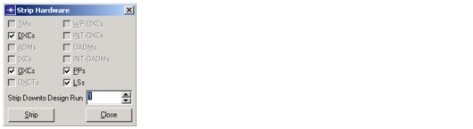

Hardware Configurator > Stripping Hardware
Stripping Hardware
You can remove installed devices and cards from the network using the Strip Hardware dialog box (Hardware > Strip Hardware). You can set the "Strip Down to Design Run" menu to strip only equipment that was added after the specified design run. Select all the equipment types that you want to remove, then click Strip to remove all the devices and cards for the selected equipment types and design runs.
Figure 13-12 Strip Hardware Dialog Box

| Home © 1987-2007 OPNET Technologies, Inc. All Rights Reserved. This software may be covered by one or more U.S. Patents. See complete patent notice in the Legal Notices section. OPNET Support Center |